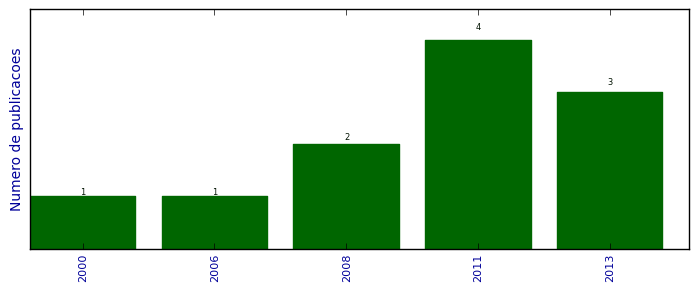

UFSM - Análise do Lattes
Artigos completos publicados em periódicos

Número total de itens: 11
(A1: 0, A2: 0, B1: 0, B2: 1, B3: 0, B4: 0, B5: 3, C: 5, Qualis não identificado: 2)
Legenda Qualis:
- Publicação para a qual o nome exato do Qualis foi identificado: Qualis <estrato>
- Publicação para a qual um nome similar (não exato) do Qualis foi identificado: Qualis <estrato> (nome similar)
- Publicação para a qual nenhum nome do Qualis foi identificado: Qualis não identificado (nome usado na busca)
2013
| 1. | Gomes, V. C. F. ; Campos Velho, H. F. ; Campos Velho, H. F. ; CHARAO, A. S.. A fast Poisson solver for hybrid reconfigurable system. Lecture Notes in Computer Science. v. 7806, p. 46-58, 2013. [ citações Google Scholar | citações Microsoft Acadêmico | busca Google ] Qualis: C |
| 2. | RUIZ, R. S. R. ; VELHO, H. F. C. ; LESSA, L. S. ; CHARAO, A. S.. Turbulent Parameterization for CCATT-BRAMS by GPU. Ciência e Natura. v. 35, p. 196-198, 2013. [ citações Google Scholar | citações Microsoft Acadêmico | busca Google ] Qualis: C (Ciência e Cultura) |
| 3. | STRECK, N. ; SILVA, M. R. ; ROSA, H. T. ; WALTER, L. C. ; BENEDETTI, R. P. ; CARLI, C. ; CHARAO, A. S. ; MARCOLIN, E. ; FERRAZ, S. ; MARCHESAN, E.. Acompanhamento da Safra 2012/2013 de Arroz Irrigado no RIo Grande do Sul por Modelagem Numérica. Ciência e Natura. v. 35, p. 368-372, 2013. [ citações Google Scholar | citações Microsoft Acadêmico | busca Google ] Qualis: C (Ciência e Cultura) |
2011
| 1. | BONIATI, B. B. ; CHARAO, A. S. ; STEIN, B. O. ; RISSETTI, G. ; PIVETA, E. K.. Automated Refactorings for High Performance Fortran Programmes. International Journal of High Performance Systems Architecture (Print). v. 3, p. 98-109, 2011.  [ citações Google Scholar | citações Microsoft Acadêmico | busca Google ] Qualis: B2 |
| 2. | CONTI, F. ; CHARAO, A. S.. Análise de Prazos de Entrega de Atividades no Moodle: um Estudo de Caso Utilizando Mineração de Dados. RENOTE. Revista Novas Tecnologias na Educação. v. 9, p. 1-10, 2011. [ citações Google Scholar | citações Microsoft Acadêmico | busca Google ] Qualis: B5 |
| 3. | RUIZ, R. S. R. ; VELHO, H. F. C. ; CARETTA, C. A. ; SOUTO, R. P. ; CHARAO, A. S.. Grid environment for turbulent dynamics in cosmology. Journal of Computational Interdisciplinary Sciences. v. 2, p. 1-6, 2011. [ citações Google Scholar | citações Microsoft Acadêmico | busca Google ] Qualis: B5 |
| 4. | RUSSI, D. F. ; CHARAO, A. S.. Ambientes de Desenvolvimento Integrado no Apoio ao Ensino da Linguagem de Programação Haskell. RENOTE. Revista Novas Tecnologias na Educação. v. 9, p. 1-10, 2011. [ citações Google Scholar | citações Microsoft Acadêmico | busca Google ] Qualis: B5 |
2008
| 1. | CARLI, D. M. ; MAZZANTI, E. S. ; DEWES, R. ; SANTOS, R. C. M. ; JUNIOR, V. S. ; CHARAO, A. S.. Comparação entre Abordagens de Paralelização para o Problema do Jogo da Vida. Disciplinarum Scientia. Série Ciências Exatas (Cessou em 2001. Cont. 1981-2841 Disciplinarum Scientia. Série Ciências Naturais e Tecnológicas). v. 7, p. 39-48, 2008. [ citações Google Scholar | citações Microsoft Acadêmico | busca Google ] Qualis: C (Disciplinarum Scientia. Série Ciências Naturais e Tecnológicas) |
| 2. | REIS, T. A. ; BOUFLEUR, M. P. ; VIZZOTTO, J. K. ; VELHO, H. F. C. ; CHARAO, A. S.. Automatização da Criação de Mapas com o Google Maps. Disciplinarum Scientia. Série Ciências Exatas (Cessou em 2001. Cont. 1981-2841 Disciplinarum Scientia. Série Ciências Naturais e Tecnológicas). v. 7, p. 129-136, 2008. [ citações Google Scholar | citações Microsoft Acadêmico | busca Google ] Qualis: C (Disciplinarum Scientia. Série Ciências Naturais e Tecnológicas) |
2006
| 1. | LUCCA, G. ; CHARAO, A. S. ; STEIN, B. O.. Metadados para um Sistema de Gestão Eletrônica de Documentos Arquivísticos. Arquivística.net. v. 2, p. 70-84, 2006. [ citações Google Scholar | citações Microsoft Acadêmico | busca Google ] Qualis: Não identificado (Arquivística.net) |
2000
| 1. | CHARAO, A. S. ; CHARPENTIER, I. ; PLATEAU, B.. Programmation par Objet et Utilisation de Processus Légers pour les Méthodes de Décomposition de Domaine. TSI. Technique et Science Informatiques, Paris. v. 19, n. 5, p. 697-720, 2000. [ citações Google Scholar | citações Microsoft Acadêmico | busca Google ] Qualis: Não identificado (TSI. Technique et Science Informatiques, Paris) |
(*) Relatório criado com produções desde 1999 até HOJE
Data de processamento: 02/04/2014 18:15:43